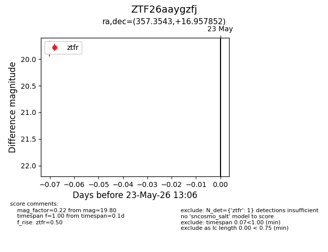
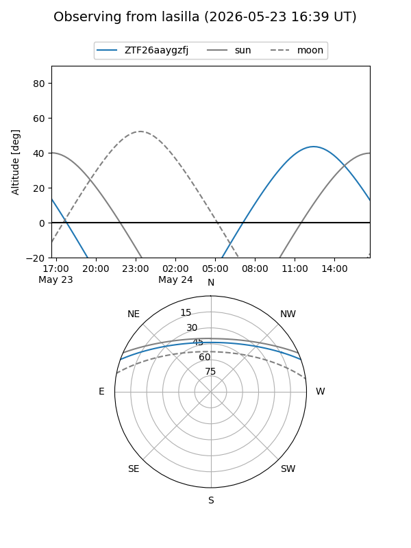
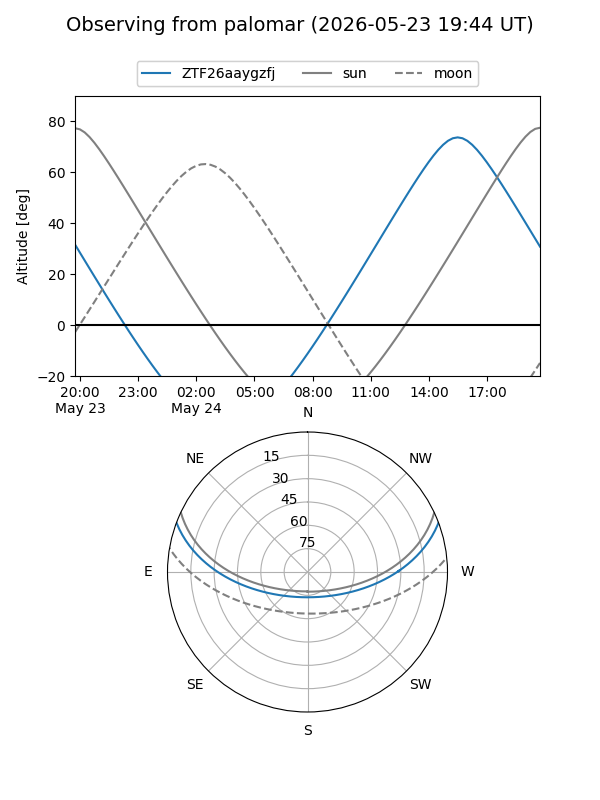

ZTF26aaygzfj
Target ZTF26aaygzfj at 2026-05-23 13:08
Aliases and brokers:
lsst-FINK: link
lsst-Lasair: link
lsst-ALeRCE: link
ztf-FINK: link
ztf-Lasair: link
ztf-ALeRCE: link
alt names
ZTF26aaygzfj (ztf,fink_ztf)
Coordinates:
equatorial (ra, dec) = 357.3543,+16.95785
equatorial (HMS+DMS) = 23:49:25.02,+16:57:28.27
galactic (l, b) = (102.3202,-43.41780)
Flags:
Photometry:
last ztfr=19.80
1 ztfr detections
Lightcurve

Visibility


Additional plots